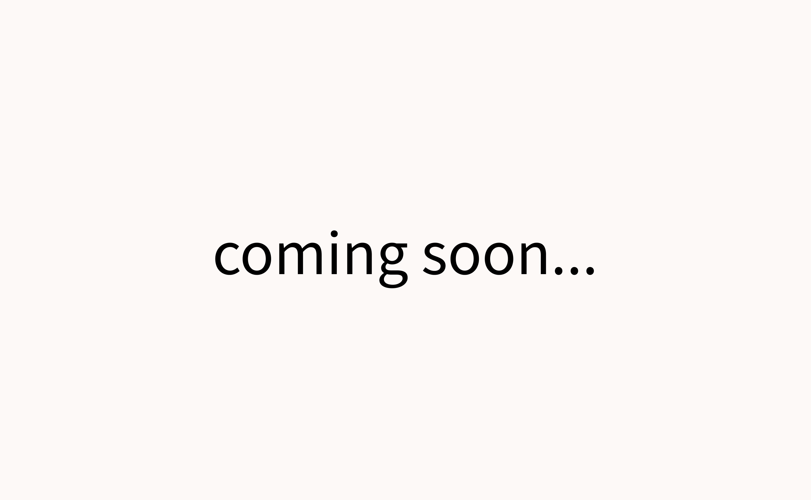

制作実績
実際に納品する予定のサイトと
これから作成する予定の架空のサイトです
- 準備中
-
企業のPV制作やYouTubeチャンネルのコンセプト設計から運営までを担当している、
動画クリエーターの水谷悠樹様のポートフォリオです。シンプルかつ優しい雰囲気をテーマに作成しました。
公開までしばらくお待ちください。
- 準備中
-
架空の空手道場のサイトを作成したいと考えています。
小学校３年生から大学生まで空手を続けてきました。
挫折や喜び、悔しさなど、さまざまな感情を体験した私だからこそしか作成できない、空手の良さをたくさん詰め込んだサイトを作ります。

- 準備中
-
一般向けのポートフォリオを作成したいと考えています。ホームページ作成をしたことがないクライアント様が見るサイトだということを念頭におき、
制作の手順やおおよその納期などを記載し、お問い合わせした後のことなどがイメージできるサイトを作ります。
- 原点回帰
- デザインを考えている時には、過剰に装飾を施したり、 アニメーションをつけてしまいますが、「意味のあるデザインなのか」「わかりやすいデザインになっているか」ということを常に自問自答することを忘れないようにしたいです。